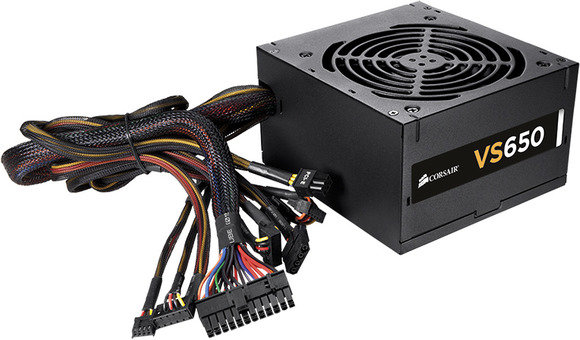

PSU
The PSU, or the power supply unit, provides and circulates power throughout the PC. It connects to the motherboard, which ultimately ends up controlling the flow of power. The other end of the PSU connects to a wall outlet. Different units have different amounts of wattage. The PSU you need depends on which parts you are using and how much power they will require. High end parts will need more power, lower end parts will require less wattage.
Click the next page button to learn about PC cases!